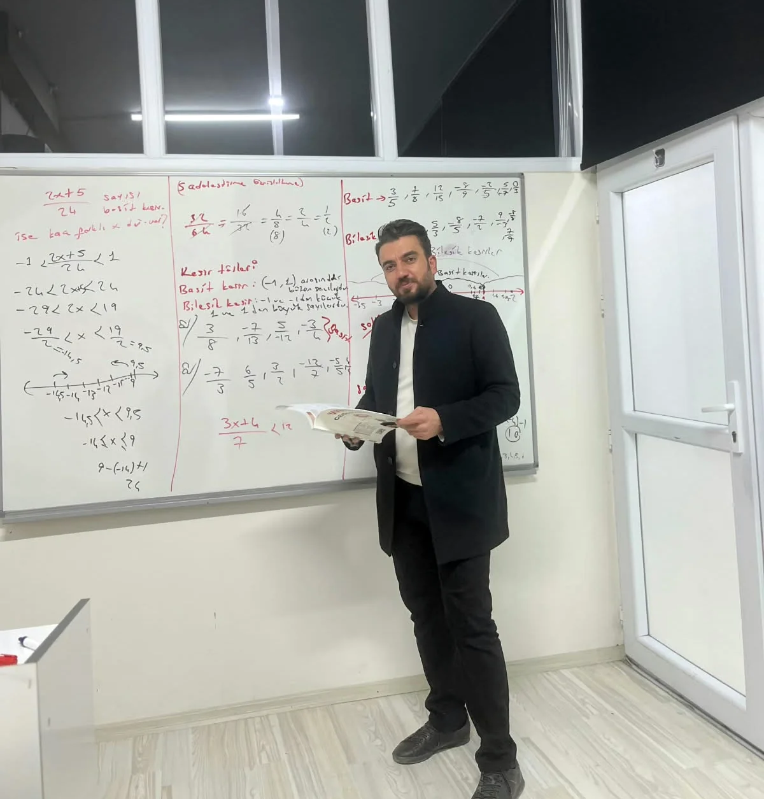
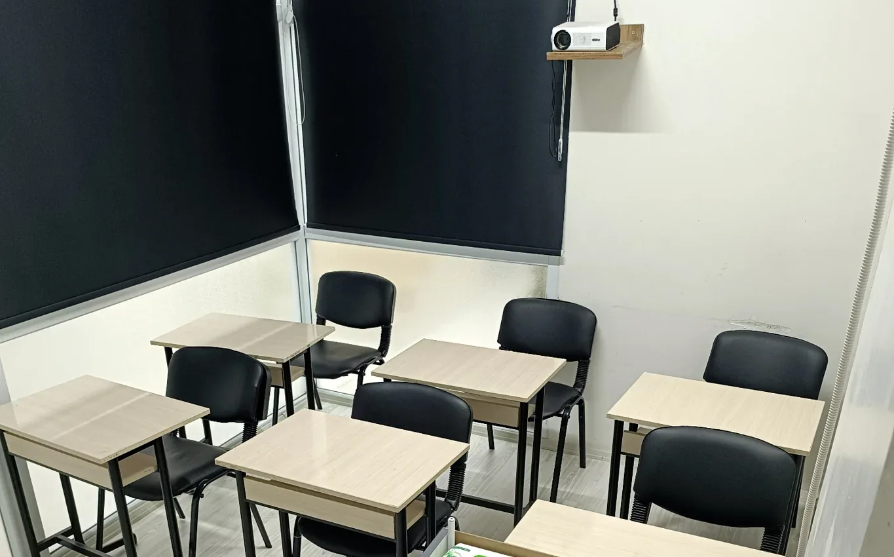

01
Kalabalıkta kaybolmayın.
En fazla 6 kişilik eğitim grupları.
Programları inceleKalabalık sınıfların ötesinde, öğrencinin gerçekten fark edildiği bir eğitim deneyimi. Abdurrahim Hoca ile matematik, Mahmut Hoca ile Türkçe; LGS, TYT–AYT ve KPSS–AGS için küçük gruplar ve birebir dersler.
Tanışma görüşmesi için randevu alın; eğitim seçeneklerini birlikte değerlendirelim.

NEDEN ECE VİP AKADEMİ?
Bir sınıfın mevcudu, soru sorma ve bireysel geri bildirim için ayrılabilecek zamanı etkiler. Küçük grupların farkını kendiniz görün.
FARKI KENDİNİZ GÖRÜN
30 kişilik sınıf örnek amaçlıdır; başka bir kurumu temsil etmez. Görselleştirme temsili olup bireysel öğrenme sonuçlarını garanti etmez.
GERÇEK AKADEMİ ORTAMI

Öğretmenin öğrenciyi tanıyabileceği, öğrencinin de kendini ifade edebileceği bir ortam.
Gerçek dersliklerimizi görünEn fazla 6 kişilik eğitim grupları.
Programları inceleSeviyenize ve ihtiyaçlarınıza uygun eğitim seçenekleri.
Seviyeni keşfet50 kişilik çalışma salonu.
Salonu keşfetHer ay düzenlenen deneme sınavları.
Takvimi inceleFarkı yerinde görün. Akademimize gelin, öğretmenlerimizle tanışın.
Tanışma randevusu alECE VİP MATH LAB: Sorunun cevabını değil, çözümün mantığını ve ihtiyaç duyduğun bilgileri keşfet.
Bir soruyu parçalara ayır. Farklı çözüm yöntemlerini adım adım keşfet.
Çözüm yollarını keşfet →02 / 03Her sorunun temel bilgi ve beceri zincirini gör. Bilginin köküne in.
Soru DNA'sını aç →03 / 03Nerede zorlandığını araştır. Ücretsiz mini değerlendirme ve çalışma önerisi al.
Röntgeni başlat →Kayıt gerekmez · Telefon ve bilgisayarda kullanılabilir · Eğitim amaçlı ön değerlendirme
Kamp fasiküllerini ve matematik çalışma kaynaklarını sınıfınıza göre bulun. PDF dosyalarını çevrim içi inceleyebilir veya cihazınıza indirebilirsiniz.
Aramanıza uygun fasikül bulunamadı. Başka bir sınıf veya kamp günü seçin.
Sınıf klasörünü seçerek PDF'leri açın veya arama yapın. Dosyaları önizleyebilir ve indirebilirsiniz.
Ortaokul, lise ve sınav grupları için matematik ve Türkçe dersleri düzenlenmektedir.
İki soruya yanıt verin; size uygun başlangıç seçeneğini işaretleyelim. Kesin program ders görüşmesinde belirlenir.
7. ve 8. sınıflar için konu anlatımı, yeni nesil sorular ve LGS hazırlığı.
9–12. sınıf ve mezun öğrenciler için TYT–AYT matematik dersleri.
KPSS ve AGS hazırlığı için matematik ve Türkçe dersleri, konu anlatımı ve soru çözümü.
Öğrencinin ihtiyacına göre planlanan birebir matematik ve Türkçe dersleri.
Dil bilgisi, paragraf ve okuduğunu anlama çalışmalarına yönelik Türkçe dersleri.
Kızıltepe’de matematik ve Türkçe eğitimi için düzenlenmiş dersliklerimizde bireysel öğrenci masaları kullanılır. Çalışma salonu eğitim alanlarından ayrı, üst kattadır.
Küçük sınıf düzeni, öğretmenin öğrencilerin soru çözümünü daha yakından takip etmesini sağlar.
Derslik fotoğraflarına bakın ↗LGS, TYT–AYT ve KPSS–AGS gruplarında konu anlatımı ile soru çözümü bir arada yürütülür.
Üst katta yer alan, kişiye ait masalarla düzenlenmiş çalışma alanı.
Çalışma salonunu inceleyin ↗Öğrencinin mevcut bilgisi ve eksik olduğu konular belirlenir.
Konuların işleniş sırası ve soru çalışmaları öğrencinin ihtiyacına göre planlanır.
Derslerdeki ilerleme ve deneme sonuçları değerlendirilerek çalışma planı güncellenir.
Öğrencinin konu çalışmaları ve değerlendirme sonuçları, veli görüşmelerinde ele alınır.
Ders içerikleri, öğrencinin sınıfına, hazırlık yaptığı sınava ve mevcut düzeyine göre planlanır.
8 ders içeriği görüntüleniyor.
8 ders kartı eşleşiyor.
8. sınıf matematik konuları ve sınava hazırlık
Okuduğunu anlama, dil bilgisi ve sözel akıl yürütme
Temel matematik ve geometri konuları, öğrencinin ihtiyaçlarına göre gruplandırılarak işlenir.
İleri düzey matematik ve geometri başlıkları; TYT temelinden ayrı, AYT kapsamına uygun biçimde düzenlenir.
TYT için anlam bilgisi, paragraf, dil bilgisi ve cümle bilgisi. AYT edebiyat bu listede yer almaz.
Temel matematik, problemler, tablo–grafik yorumlama ve sayısal mantık
Anlam bilgisi, paragraf, dil bilgisi ve anlatım bozuklukları
AGS hazırlığına yönelik matematik ve Türkçe destek çalışmalarında ele alınabilecek başlıklar. Resmî sınav kapsamının tamamı değildir.
Kapsam ve program ayrıntıları için akademimizle görüşebilirsiniz.
Yoğunlaştırılmış çalışmalar ve düzenli sınav uygulamaları eğitim takvimimiz kapsamında yürütülür.
Belirli dönemlerde matematik ve Türkçe derslerinin birlikte yer aldığı yoğunlaştırılmış konu anlatım kampları düzenlenir. Programlar, seçilen konuların kısa sürede ve sistemli biçimde ele alınmasına yönelik hazırlanır.
Matematik ve Türkçe konularına yönelik test çözme kamplarında farklı soru türleri üzerinde çalışılır. Çözümler değerlendirilir, eksik görülen konular üzerinde durulur.
Akademimizde her ay deneme sınavları gerçekleştirilir. Sınav sonuçları öğrencilerin konu ve soru düzeyindeki gelişimini değerlendirmek amacıyla kullanılır.
Kamp tarihleri, kapsamı ve deneme sınavı takvimi hakkında güncel bilgi almak için bizimle iletişime geçebilirsiniz.
Takvim Hakkında Bilgi Al ↗Dersliklerimizin farklı açılardan çekilmiş fotoğrafları. Üzerine tıklayarak büyütebilirsiniz.
Eğitim programlarımızın matematik ve Türkçe dersleri, kendi alanlarında çalışan öğretmenler tarafından yürütülür.
Konu anlatımı, problem çözümü ve sınav hazırlığı çalışmalarında öğrencinin mevcut seviyesine uygun bir ders planı uygulanır.
LGS / TYT–AYT / KPSS–AGSParagraf, okuduğunu anlama, sözcük ve cümlede anlam ile dil bilgisi konularında sınav odaklı çalışmalar yürütülür.
LGS / TYT / KPSS / AGSSessiz, temiz ve ferah ortamda bireysel çalışmaya ayrılmış 50 kişilik salonumuz akademimizin üst katında yer alır.
Günlük veya aylık kullanım koşullarını ve güncel doluluk durumunu öğrenmek için iletişime geçebilirsiniz.
Salon için bilgi isteyin ↗Gün boyunca sessiz ve düzenli çalışma ortamı
Kişiye ait masa ve 50 kişilik salon kapasitesi
Ders ve etüt seçenekleri için kurum danışmanlığı
Bireysel çalışma düzeni için planlanmış üst kat salonumuzda kendi masanızda çalışabilir; danışmanlık ve soru çözümü hakkında bilgi alabilirsiniz.
Salon için görüşme isteyin ↗Günün akışı öğrencinin ders programına göre değişir. Aşağıdaki şema, çalışma salonu ve eğitim etkinliklerinin genel düzenini gösterir.
Kişiye ait masalarda sessiz çalışma ve günlük hedeflere odaklanma.
Az kişilik matematik ve Türkçe gruplarında konu anlatımı ve soru çözümü.
Çalışılan konularla ilgili soruların değerlendirilmesi ve ek tekrar.
Çalışma salonu kullanımının sonu; ders ve etüt saatleri ayrıca bildirilir.
Ders, etüt ve danışmanlık saatleri için güncel program ve uygunluk durumunu kurumdan öğrenebilirsiniz. 09.00–23.00 saatleri çalışma salonuna aittir.
LGS, TYT veya KPSS düzeyini ve matematik ya da Türkçe alanını seçin. Beş sorunun ardından cevap açıklamalarını inceleyebilirsiniz.
Bu etkinlik resmî bir seviye belirleme sınavı değildir; kısa bir konu ve soru çalışmasıdır.
Notlarınız yalnızca bu cihazdaki tarayıcıda saklanır. Başkalarına iletilmez.
Güncel ders günleri, kontenjan ve kamp tarihleri hakkında ayrıntılı bilgi için akademimizle iletişime geçebilirsiniz.
Bize sorun ↗Grup derslerinde en fazla altı öğrenci bulunmaktadır.
Matematik dersleri Abdurrahim Hoca, Türkçe dersleri Mahmut Hoca tarafından yürütülür.
Program ve grubun ihtiyaçlarına göre belirlenir. Güncel ders günlerini ön görüşmede öğrenebilirsiniz.
Evet. Her ay deneme sınavı uygulanır; tarih ve katılım bilgileri duyurulur.
Matematik ve Türkçe ağırlıklı kamplar belirli dönemlerde planlanır. Açılan programların takvimi ayrıca bildirilir.
Çalışma salonu 09.00–23.00 saatlerinde kullanıma açıktır. Günlük/aylık kullanım koşullarını akademimizden öğrenebilirsiniz.
Seviye tespit görüşmesi için talepte bulunabilirsiniz. Deneme dersi imkânı ve koşulları hakkında iletişimden bilgi alabilirsiniz.
Öğrencinin konu çalışmaları ve deneme değerlendirmeleri veli görüşmelerinde ele alınır.
Öğrenciler için hazırladığımız kısa tekrar kaynaklarını doğrudan indirebilirsiniz.
Temel işlemler, geometri ve sık kullanılan bağıntıları hatırlatan üç sayfalık özet.
Paragraf okuma stratejileri, yazım kurallarına yönelik kısa notlar ve cevaplı alıştırmalar.
GELECEĞİNİZE BİR ADIM DAHA
Gelin, tanışalım. Eğitim yolculuğunuzu birlikte planlayalım.
Ön görüşme talebi, kesin kayıt yerine geçmez.
Ders programı, grup kontenjanı ve kayıt koşulları hakkında telefon veya WhatsApp üzerinden bilgi alabilirsiniz.
WhatsApp’tan Yazın ↗Seviye tespit görüşmesi için randevu isteyebilir, deneme dersi seçeneklerini sorabilirsiniz.